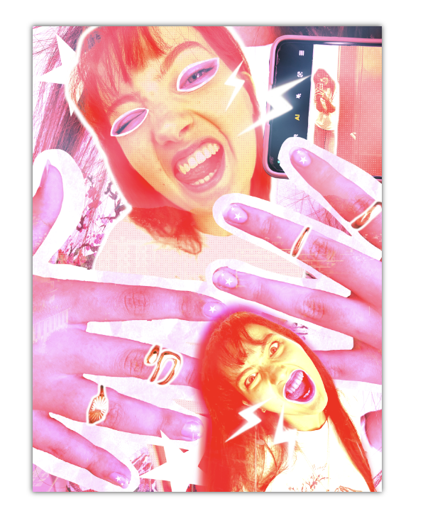

EXPRIMER
Affiche de direction artistique

Ce projet a été réalisé de manière individuelle dans le cadre d’une expérimentation graphique autour du Pop Art. L’objectif était de créer une affiche à partir de photographies personnelles en explorant un univers visuel libre, basé sur des couleurs vives et des compositions graphiques fortes.
J’ai utilisé Photoshop pour composer l’affiche en travaillant à partir de photos prises directement avec mon téléphone. J’ai construit une direction artistique inspirée du Pop Art, notamment avec des éléments graphiques comme les pointillés, les contrastes forts et les formes dynamiques, en m’appuyant également sur un moodboard pour guider mes choix visuels.
Le projet ne comportait pas de contraintes strictes, ce qui m’a permis d’expérimenter directement sans passer par plusieurs versions. J’ai construit la composition de manière progressive en testant différentes idées au fur et à mesure de la création. Avec du recul, ce projet m’a permis de renforcer ma capacité à explorer une direction artistique sans contrainte, même si certaines compositions auraient pu être davantage affinées.
AC 33.01 : Adopter et justifier une démarche originale et personnelle dans ses productions.